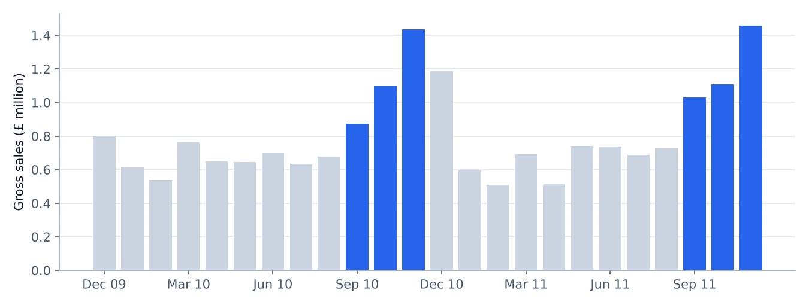
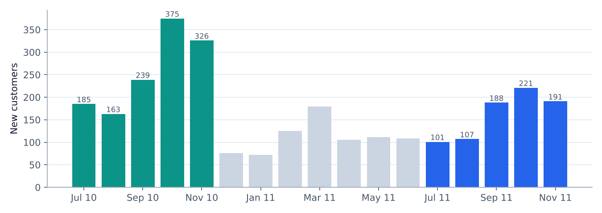

UK online gift retailer: where growth came from, and where it is leaking
Real, anonymised transactions of a UK online store (public UCI "Online Retail II" dataset). Last 12 months = Dec 2010 – Nov 2011, compared with the 12 months before. Amounts in GBP.
Net sales grew +6.1%, but only because orders got bigger: the number of orders fell 4.0% and first-time customers in Jul–Nov fell 37.3%. The store now leans on a small group of loyal buyers, and 416 of its regulars have gone quiet.
Net sales (after refunds)
Orders
Average order value
Known customers who ordered
Refund rate
Monthly sales: a strong Sep–Nov peak both years
Gross sales by month; peak months in blue.

Finding 1 · New customers are drying up
First-time buyers per month. Jul–Nov 2010 brought 1,288 new customers; the same months of 2011 brought 808. Growth came from existing buyers spending more per order, which cannot last forever.

Finding 2 · Revenue depends on a few loyal buyers
The top 10% of customers (429 accounts) brought 60.3% of last year's revenue from known customers. Below: every customer grouped by how recently and how often they buy.

Finding 3 · Refund leaks by product
Products with the most money refunded in the last 12 months. A high refunded share usually points to a quality, packaging or description problem.
| Product | Refunded | Sales | Refunded share |
|---|---|---|---|
| Regency Cakestand 3 Tier | £9,797 | £181,957 | 5.4% |
| White Hanging Heart T-Light Holder | £6,624 | £109,678 | 6.0% |
| Fairy Cake Flannel Assorted Colour | £6,554 | £18,301 | 35.8% |
| Pantry Chopping Board | £4,803 | £5,806 | 82.7% |
| Doormat Fairy Cake | £4,555 | £24,109 | 18.9% |
| Gin + Tonic Diet Metal Sign | £3,775 | £26,272 | 14.4% |
| Tea Time Party Bunting | £3,693 | £13,130 | 28.1% |
| Feltcraft Doll Molly | £3,519 | £11,958 | 29.4% |
| Colour Glass. Star T-Light Holder | £3,256 | £18,912 | 17.2% |
| Pink Blue Felt Craft Trinket Box | £2,779 | £13,765 | 20.2% |
Best sellers, last 12 months
| Product | Revenue | Units |
|---|---|---|
| Regency Cakestand 3 Tier | £181,957 | 14,487 |
| White Hanging Heart T-Light Holder | £109,678 | 39,018 |
| Party Bunting | £99,377 | 18,321 |
| Jumbo Bag Red Retrospot | £94,680 | 48,787 |
| Paper Chain Kit 50'S Christmas | £63,339 | 18,721 |
| Assorted Colour Bird Ornament | £59,439 | 36,647 |
| Rabbit Night Light | £57,322 | 26,477 |
| Chilli Lights | £56,095 | 10,766 |
| Jumbo Bag Pink Polkadot | £42,237 | 21,379 |
| Spotty Bunting | £41,783 | 8,189 |
What we would do next
1. Win back the at-risk VIPs
416 customers who averaged 9.0 orders have not ordered for about 105 days. A personal email or call with a reorder offer is cheap. If 20% came back at their old pace, that is about £18,386 a month.2. Fix new-customer acquisition before the next peak
First-time buyers in Jul–Nov changed by −37.3%. Review ad spend, marketplace listings and the first-order offer, and track new customers every month.3. Protect the top 10%
With 60.3% of revenue coming from them, losing a few big wholesale buyers would hurt. Give them early access to the Christmas range and a named contact.4. Check the high-refund products
For example, 82.7% of Pantry Chopping Board sales were refunded. Fix the listing or the supplier, or drop the product.
Finrows turns Shopify / e-commerce order exports into monthly reports like this one.
Contact Ali Usman · alikhokhar.ak1012@gmail.com · LinkedIn
About the data and method
Source: "Online Retail II", UCI Machine Learning Repository (Chen, 2012), also on Kaggle. A UK-based online gift-ware retailer whose customers are often wholesalers. Transactions 1 Dec 2009 – 30 Nov 2011 (the partial month of Dec 2011 is left out).
Cleaning: removed postage, bank charges, manual adjustments and zero-price lines; removed one data-entry error in Jan 2011 (a single 74,215-unit order cancelled 16 minutes later). Refunds are invoices starting with "C". Orders without a customer ID (about 15% of last year's sales) count in sales but not in customer figures. "New customers" = first purchase seen in this data. Customer groups use recency and order count as of 1 Dec 2011: Champions = ordered in the last 60 days with 5+ orders; At-risk VIPs = 61–180 days quiet with 5+ orders; Lost = quiet for more than 180 days. No cost data is available, so this report covers revenue, not profit.
Code and tables: github.com/alikhokharak/finrows-store-report